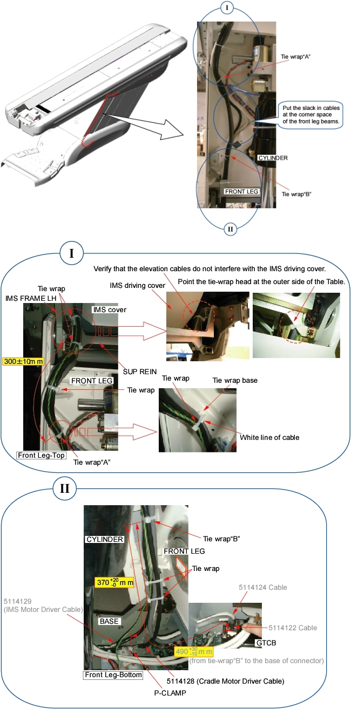

Operating Documentation
Direction 5307452-8EN, Rev# 4
Discovery CT750 HD Service Methods - Adv
Operating Documentation |
| Required Persons | Preliminary Reqs | Procedure | Finalization |
|---|---|---|---|
| 1 |
| Last Revised: | 25 June 2008 |
| Item | Qty | Effectivity | Part# | Manufacturer | |
|---|---|---|---|---|---|
| 5114128 Cable | 1 | - | - | - | |
Raise the Table to maximum height.
Move the Cradle and IMS to OUT limit position.
Remove power from Table by turning off 120VAC, Axial Drive and HVDC switches on Service Switch Panel.
Remove the following Table covers:
Top Cover (Left)
IMS Rear Cover
IMS Side Cover (Left)
Front Side Plate (Left)
Rear Side Plate (Left)
Front Base Cover
Illustration 1: Table Covers

Cut any tie-wraps holding the cable (5114128 ) to the Table frame.
Disconnect the cable connectors as follows:
5114128 - (Cradle Motor Driver ↔ J204, Connector)
-
Remove the cable(s) from the Table.
Route the new cable(s) along the inside of the front leg assembly just like the old cable(s) (see illustration below).
Illustration 2: Cable Routing

| When routing the cable(s), excessive slack or no slack in cable(s) MUST be prevented. When the Table is moved (up/down), excessive slack will cause catching up other parts and no slack will cause cutting the cable. | |
Connect the cable connectors, and fasten the cable(s) to the Table frame with tie-wraps (see Illustration 2).
Verify that the cable connector does not interfere with IMS movement.
Power up the Table from the Service Switch Panel.
Verify that the Table moves up and down normally.
Turn off all 3 switches (Axial Drive, HVDC, 120VAC), and re-install the Table covers.